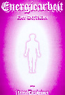
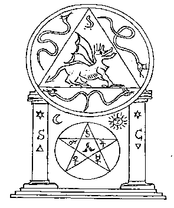
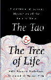

This page hosted by  Get your own Free Home Page
Get your own Free Home Page
I practice Franz Bardons teachings with a french book "La Lumiere sur le royaume" (Light on the Realm). The author seems to know really well everything about FB. He gives many rituals that I use, inspired but not similar to Golden Dawn ones.
I have read a ton of books about magic and esoterism in general and the best I have found is, without a single doubt 'La lumiere sur le Royaume', the book which I talked you about. The author, Alexandre Moryason describes a complete but simple magic system to purify the whole body (physical, astral,mental).
He says that the best thing to do is to practice the rituals that he describes WITH FB's teachings. And if you do so, you'll be contacted (???) in a way or another, by him.
The rituals are simple and easy to achieve. They are similar for some parts, to Golden Dawn's one, but only with the active parts (that's anyway my interpretation).
Alexandre Moryason seems to have many, many informations about Franz Bardon. But what is very interesting, is that HE HAS TRANSLATED ALL HIS BOOKS (into French), and 'souvenirs...'. And for each page, you have his personal notes which clarify some points. He makes parallel with Eastern traditions, that he seems to know very well. These notes are very complete and, as always, clear.
I wish you could read French, becouse I am sure that you would appreciate a lot the translation.
ALEXANDRE MORYASON
La Lumiere sur le royaume
ISBN: 2-9501459-0-6
eventually available at:
Librairie Astres
33, boulevard Voltaire
75011 Paris
Tél: ++ 1 48 05 00 05
Summon Miracles with the Help
of Powerful Spirits
SUMMONING SPIRITS
The Art of Magical Evocation
Konstantinos
Evoking spirits is one of the most powerful and beneficial
magical techniques you can use. But for centuries, this
technique has either been kept secret or revealed in unusable
fragments by those with little practical evocation experience.
MAGIC/OCCULTISM
ISBN 1-56718-381-6
7 x 10, 240 pp.
illustrations
$14.95 U.S
.$20.95 Can.
Summoning Spirits is a complete training manual written by a practicing
magician,
and makes performing evocations easy to do, using the simple instructions
in this
manual to effect miraculous changes in your life. Obtain mystical abilities...
find
hidden treasure... command a spirits to protect your home! Includes
sample rituals.
(The following is from the "alt.magic" newsgroup. PA)
Mr. Konstantinos on Franz Bardon:
"In my opinion, his methods of teaching and the techniques he explains are the best found in modern occultism. Although difficult to attain, he explains that the true goal of a magician is to become an adept; not to just perform interesting rituals."Mr. Konstantinos on his book "Summoning Spirits: The Art of Magical Evocation":
In my book I give a complete training technique that does not require the amount of training Bardon required. While Bardon was probably the greatest adept of the 20th century, and working his training methods can help one down a similar path, it is not necessary to become an adept to evoke entities. Judging by reader mail, it takes about two months of serious effort to work the initial results described in Summoning Spirits.Bright Blessings, Konstantinos
A fragment of Lomer's book was published erroneously in "Frabato" under the name of Franz Bardon. The original German version of this course of magic in the form of 7 "letters" was reprinted by Dieter Rüggeberg Verlag in 1995 as a book of 197 pages.
The English translation "Seven Hermetic Letters" can be ordered at:
Merkur Publishing, Inc
P.O. Box 171306
Salt Lake City, Utah, USA
phone: 801 272 9008
84117 price US$ 16.95
(I would like to thank Mr. Richard Orion Tschudi who contributed this
information.)

Peter Dexheimer published in 1995 his book "Energiearbeit" = "Energywork" which basically describes a special method to use Franz Bardon's quabbalistic formulas. This method was first devised by Cuno-H. Müller and extensively used by the Bardon-Müller Liga (BML) in the '60- and '70. (See also Rüggeberg's comment on the BML.)
Cuno-H. Müller ignored Bardon's warnings to practice the quabbalistic formulas without proper preparation. Peter Dexheimer now discusses Müller's method extensively in the 5 volumes of "Energywork".
In summary: the quabbalistic formulas of Bardon are repeated like mantras
in a way which is called "Japa-Joga" in the Indian Joga terminology. By
this repetition the connected qualities are believed to be realized after
a certain number of repetitions. Japa-Joga is in my opinion a VERY POWERFUL
tool, especially for beginners, because no special magical training is
required and everyone can immediately begin to realize his wishes. And
it is a very safe method (in my opinion). I did Japa-Joga for long times
and got only positive results (I was inspired 20 years ago by the Indian
jogi Swami Muktananda, who was able to realize very high states of consciousness
with this method). This method is almost unknown in the western world and
therefore I appreciate Dexheimer's book.
Yet Mr. Dexheimer has a different point of view: he thinks, that practicing
Cuno-H. Müller's method is quabbalistic work as intended by Bardon.
Everyone may decide on his own experience and reasoning.
But please consider Rüggeberg's warnings before you decide to
practice it. Mr. Stenjar also warns against this method, because he believes
that there may be long-term harms.
e-mail: PDEXHEIMER@aol.comEnglish edition:
All books can be ordered also at every local bookstore.
(I would like to thank Mr. Richard Orion Tschudi who contributed this
information.)

Sigill of the FOGC
The very dangerous black magic lodge FOGC (Freemasons Order of the Golden Centurion = Freimaurerorden der Goldenen Centurie) was described in Frabato by Otti Votavova. Christopher Wolfenstein now claims to be in possess of secret materials concerning the FOGC. He published a book in spring 1998 where these secret ceremonies and activities of the FOGC are unveiled. This book is still available ! (Only in German language.)
For further details check out the following links: A.
A.O. (Alpha & Astron & Omega)
and: FOGC .:
99 :.

The Tao & The Tree of Life.
by
Eric Yudelove
Llewellyn ©1996
ISBN 1-56718-250-X
256 p.
36 illus., appendices
$14.95 U.S.
$20.95 Can.
For further details see: Excerpt of Yudelove's "The Tao and the Tree of Life". This excerpt contains only parts which are related to Franz Bardon. But I think that the entire book is very interesting and therefore I give also a table of contents.
Mr. Yudelove welcomes any inquieries, questions or comments. Please email: yudelove@aol.com.
(Other books by Eric Yudelove).
(I would like to thank Mr. Richard Orion Tschudi who contributed this
information.)
AK states the second circle shows the names of god in the various languages of the earth. Look at no.23 for Angli (English) and next door for Hyberni (Scottish) It stretches the bounds of credibility that all these words are the name of god in that locale. But I'll let it pass. At the top of the diagram on the leaves are 3 letter combinations in Hebrew script. (These are the names of the mercurial spirits without the -al or -iah suffix of the angelic names.) Note in the commentary at the bottom of the page "On no account to be used for magical invocations". The books title is Athanasius Kircher. A Renaissance Man and the Quest for Lost Knowledge." Published in the UK by Thames & Hudson in 1979. Author, Joscelyn Godwin. (ISBN 0500 81022 2 ).
(I would like to thank Mr. Paul M. for the contribution of this introduction to AK and for the scan of the diagram. Paul M. was the first one who actually noticed Bardon's quantity keys on AK's diagram. PA)
See also: "How
the Angelic Names of the Mercury Sphere are derived from the Holy Bible".
(See also Rüggeberg's comment on the "Franz Bardon Foundation" by Jim Milligan)
(I would like to thank Mr. Paul M. who owns the original copy of this
FBN by Jim Milligan.)
Mahavatar Babaji
by Daniel S.
(January, 14. 1998)
Have you ever looked at what might be a unique connection between the
person known as Franz Bardon, and the life of the Siddhar named Boganathar
(Bogar).... both have a biographic relationship to Lao Tzu.
Bogar was the person who initiated Mahmuni Babaji the deathless saint
of Badrinath.... Bogar exited the body and entered the body of a boy that
was dying in China called Lao Tzu.... This seems to be an accepted fact
by the followers of Bogar... There is also mention about him in Babaji
and the 18 Tamil Siddhars. There is a striking resemblance in character.
Here is a short account of the Tamil Siddhars with some mention of him...
The more I read about them, the more the connection makes sense.
Dan S.
Joseph Caezza on the Tamil Siddhars and Rosicrucians:
http://www.levity.com/alchemy/caezza.html
http://www.levity.com/alchemy/caezza3.html

This page hosted by  Get your own Free Home Page
Get your own Free Home Page